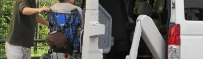

SERVICES
サービス案内
東京葛飾区を中心に24時間365日対応いたします
車いすをお持ちでなくても、付添いの方がいなくても、介護資格を持つ乗務員がしっかりサポートします。 歩行困難な方や走行に不安のある方などどなたでも、お気軽に日常の交通手段としてご利用ください。
サービス案内を更に知る
車いすをお持ちでなくても、付添いの方がいなくても、介護資格を持つ乗務員がしっかりサポートします。 歩行困難な方や走行に不安のある方などどなたでも、お気軽に日常の交通手段としてご利用ください。
サービス案内を更に知る
私たちのモットーは、お客様一人一人の立場に立ち、 「愛を込めて(アイズ＝ai + with)」接すること。
そのために、「気配り・目配り・思いやり」の スローガンの下、安心・安全で真心をこめた 福祉移送サービスを提供します。
詳しく見る
私たちのモットーは、お客様一人一人の立場に立ち、 「愛を込めて(アイズ＝ai + with)」接すること。 そのために、「気配り・目配り・思いやり」の スローガンの下、安心・安全で真心をこめた 福祉移送サービスを提供します。
詳しく見る
介護タクシー アイズは、あなたのお出かけのお手伝いをいたします。どのような目的でもご利用いただけます。ちょっとしたお出かけの際にもどうぞ気軽にご利用下さい。
01
車両は車いすのまま乗車可能な福祉車両です。ヘルパー資格を持つドライバーが、あなたの乗降を介助します。
02
お買い物代行・お薬の受け取り・駅や空港への移動手段として・観光等、日常のお出かけをサポートします。
ご利用シーンを見る
料金のご案内
ご予約、お問い合わせがございましたら、お電話、メールにてお願いいたします。
どなたでもお気軽にどうぞご利用ください。